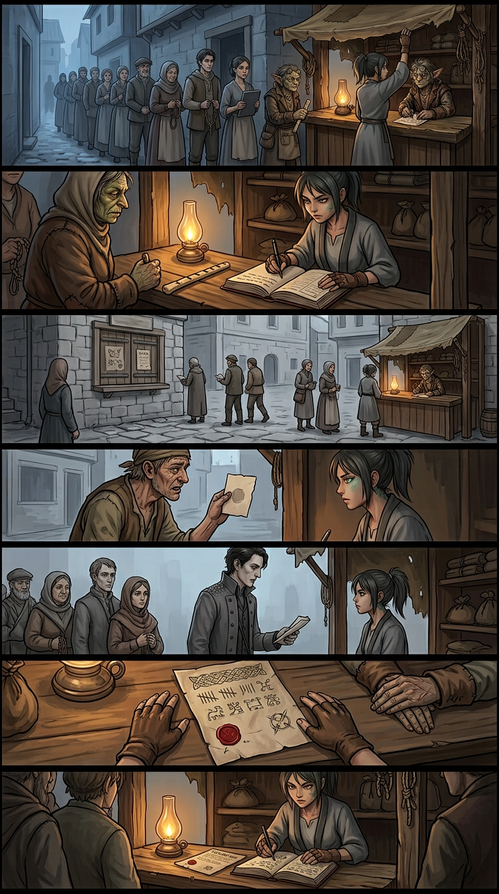
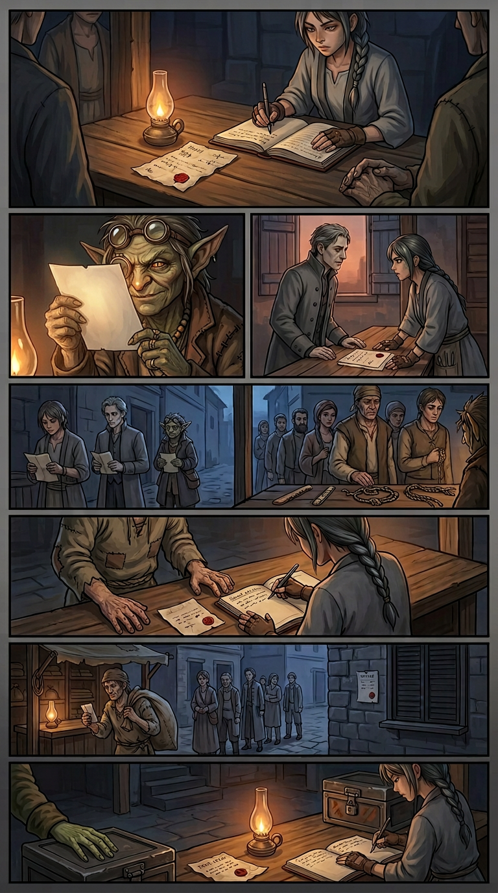
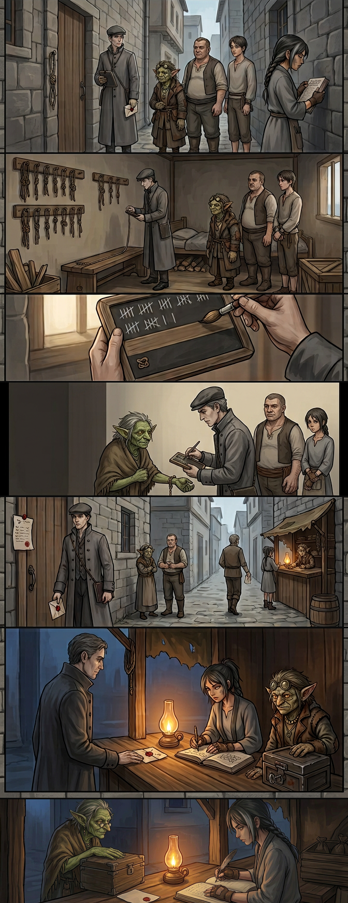
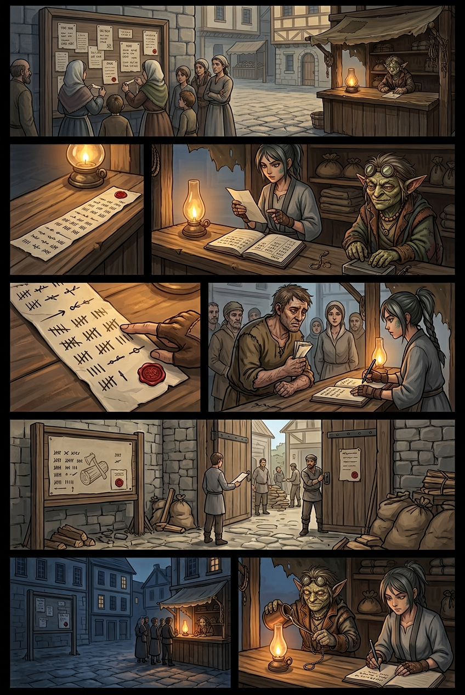
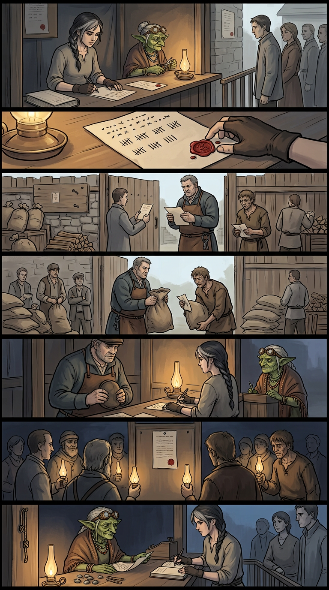
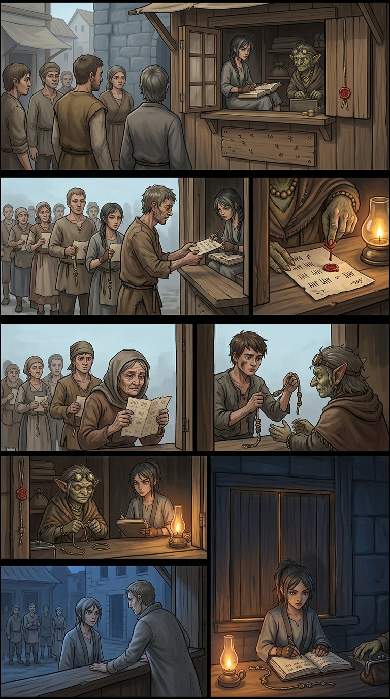
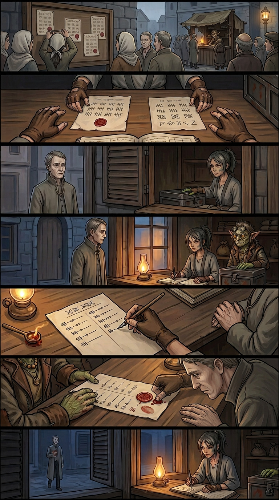
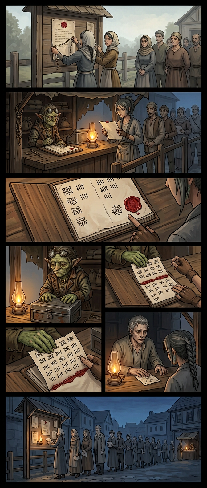
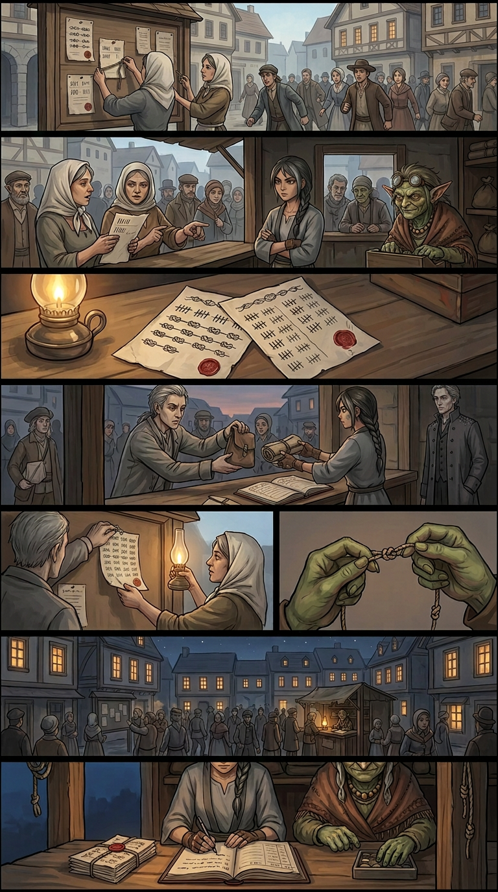

Chapter 013 — The Second Office
Arc I — The Unspooling · Agnikhand · 10 pages · complete · English + Hindi. Pick a page, or read straight through.

001
002
003
004
005
006 007
007
008
009
010Chapter 013 — The Second Office — CLOSE-OUT
Arc: III — The Second School · Sector: Agnikhand, Ashfall Basin · Pages: 10 Format note: English-only throughout (user instruction from Ch. 012 Page 004; AUDIT R13.22).
Chain-stop budget: ONE — SPENT on Page 008, on the threshold itself: the machine's hands entering the counter as a man (the clerk, uncovered, no seal), not a blow.
Synopsis
The Office suspends its own count — pending the count — and discovers that a machine that cannot count can still not do anything: no stamps, no validated paper, no disputes heard. The basin's paper has to go somewhere, and it goes to the Knot & Nail. Chapter 013 is the ten days in which a seamstress's counter becomes the basin's working table of record — the second Office — and learns, clause by clause, what that costs.
It opens with a queue at dawn that is itself a verdict (the street decided overnight where its paper goes), the first ruling in the keeper's book — six measures, hollow-interest void, in the Office's own grammar because that is the only grammar the basin's debts were ever written in — and the first crack: an old Office-stamped lease against the school's three unnamed hands, saved for exactly this morning by somebody who is not the tenants. Ira's ruling makes the chapter's method: enforceable but unbindable — a paper binds names, the tenancy holds hands, and the register so finds. The Office's grammar, used to make the Office's paper helpless.
The stamp question ripens into the counter's first mint: the register cannot stamp, so it certifies — a debt disputed pending the count, honour it or defy a record by name — and the foreman pays, and Kessa bridles the same hour: a keep is not a mint. The Office answers with inventory (granary, fuel, lamp-oil), an inspection demand on the school's room, and the amendment file — and finds nothing: the slate can carry the knot, never the hand; the room counts correct and files as a room where nobody lives, which the Office cannot tax. The clerk's real stroke is the mint clause — paper under stamp, all else not record — read aloud at the counter by the keeper because the street now routes the Office's own paper through the counter to be read (the reading of record: an institution nobody planned).
The wobble (does a certificate still count?) is answered by the register paying its debts before noon: a definition rules forward; it cannot reach backward over what was already witnessed — and the foreman honours in view of his yard, then buys the new thing: protection of record — entered, not read aloud. The trap that follows (endorsement only at the Office's counter — the counter that is shut) is answered by a door built in the middle of it: the endorsement window. They demanded a counter. Here is one. The clerk's counter-counter is the first unwritten move — sent-speech: file weekly in Office grammar or be named — and the register's third-grammar answer is symmetry as siegecraft: both books, both ways, or neither. The clerk blinks informally (unsigned, unsealed, out of hours), the register enters the slip as received and waits — and when the Office formalizes the courtesy it never agreed to, the two papers are read side by side, and the clerk crosses the threshold as a man: the chapter's ONE chain-stop, spent on the lamplight's edge. His bare thumb-mark in the wax beside the keeper's knot is the basin's grammar learned from two years of reading the register.
The machine eats its one flexible part: the disavowal — "the act of an individual, without authority" — erasure by passive voice, the first man it ever stripped a name off of, on purpose. The register answers with the paper (it may decline his act; it may not decline his mark) and with the mirror of its own school: protection of record, granted to the enemy — his name entered, not read aloud — and enters the last fact without comment: seen, at the hatch, dusk, standing in the queue of the basin's people. Him, too. The finale closes the loop: the terms accepted in the machine's own hand — no apology, no seam anyone will ever find — the first weekly delivery arriving looking like clerking (the revolution IS clerking), the permit-dark struck because a light read in public cannot be rationed in the dark, the first unrationed dusk with the stall's lamp indistinguishable at last — and both books at one table, each under the other's grammar, at a counter where paper goes to be read and nobody owns the table.
What the chapter built (state carried forward)
- The second Office, in routine: endorsements at the window; the weekly delivery (granary, fuel, permits — duplicate, sealed, publicly read); the reading of record performed by basin readers; the acceptance seamless into procedure. Routine is the strongest grammar there is.
- New institutions, priced: the mint and its limit (a keep is not a mint — one certificate per disputed debt, no interest, void at the count's end, the keeper's name at every foot); protection of record (entered, not read aloud) — first used on the enemy; the window's price knotted in the till-cord (three knots remain — nothing learned in fear gets unlearned).
- The certificate economy: running. The foreman's gate rule stands (paid against the keeper's paper). The claimant is paid; his arc closed at the window.
- People: the clerk erased by his own machine and protected by the register — a queue figure now, not a plot; the counting-lesson women arc queue → fetchers → readers of record; Rekhak's folded paper shown (the FOLD) and not presented — his page is another chapter's warmth; the runner promoted to messenger and rested; the foreman protected, unnamed on-panel.
- Unspent on purpose: the mother — never on panel, never speaking; her last answer still working. Loom absent all chapter. The three entered hands still unnamed — armoured, itemized unnamed in the final entry. Year nineteen turned once, in a caption, unannounced.
Chapter engine (what made it run)
- Grammar as siegecraft, both directions: every Office move is a definition; every counter-move is a third thing — not grant, not refuse (rule), not file, not refuse (symmetry), not written, not refused (entered as received). The ladder this chapter: rule it, keeper / count it, then / light it anyway / enter it anyway / protect the name / answer it anyway / read it back — both ways / cross, then / him, too / read both.
- Records are the weapon and the prize: papers wanted to be unreadable; the counter's whole trade is making them readable — at the price of the keeper's name on everything that leaves.
- Chain-stop budget: ONE — SPENT on Page 008 (the threshold). See AUDIT §R13.38. The budget line above is the audit-gated literal.
See also
- Pages:
story/page-001.md…story/page-010.md(cast files per page incharacters/) - World:
other/glossary.md(21 chapter terms),other/locations.md - Images:
images/page-001.png…images/page-010.png(all agent-read; human queue retains authority — AUDIT §R13.29–§R13.40) - Prior state: Chapter 012 close-out (
../chapter-012/chapter-summary.md)